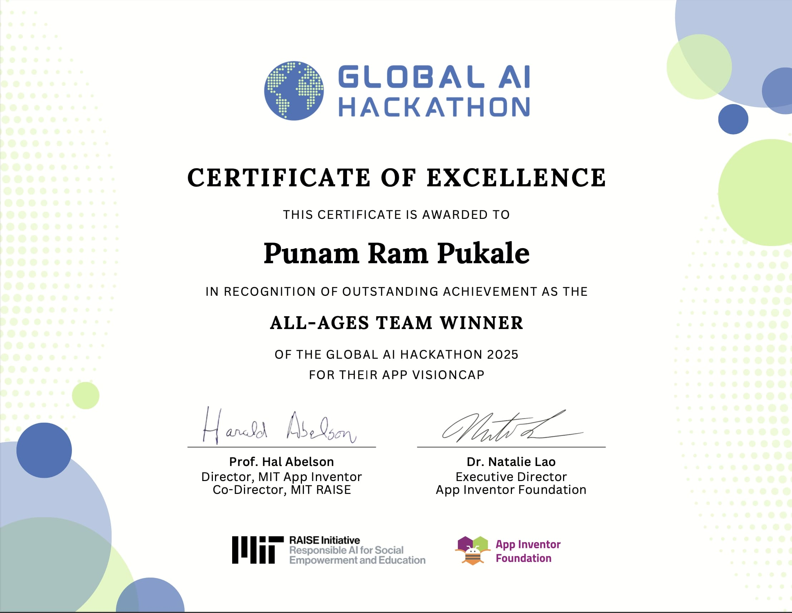

Building production-grade AI platforms, agentic workflows, RAG systems, secure microservices, and scalable full-stack applications.
Hey there! I’m Punam, a Software Engineer with 8+ years of production experience across FinTech, healthcare, insurance, and e-commerce. I specialize in TypeScript, Node.js, distributed systems, and LLM-powered agentic platforms.
I build production-grade RAG pipelines, multi-step tool orchestration, MCP A2A integrations, and secure microservices. My recent work includes an agentic RAG platform for financial compliance using Python, LangChain, LangGraph, Weaviate, Claude Sonnet 4.5, and GPT-5.
At Morgan Stanley, I worked on an agentic AI platform that reduced analyst research time by 60%. I also integrated Model Context Protocol (MCP) to standardize agent access to internal tools and data sources.
I have extensive experience building scalable full-stack and distributed systems using React, TypeScript, Node.js, FastAPI, PostgreSQL, Redis, RabbitMQ, Docker, Kubernetes, and AWS EKS.
My engineering focus includes AI agents, RAG, multi-agent orchestration, LLM evaluation, API security, observability, distributed systems, and cloud infrastructure.
I’m also the First Prize winner of the 2025 Global AI Hackathon at MIT, competing among 1,300+ participants from 86 countries, and a published IEEE author.
I completed my Master of Science in Computer Science from the University of the Pacific.
I enjoy building technology where strong software engineering meets practical AI — especially intelligent systems that solve real-world problems. 🚀
Recognition for AI innovation, engineering, and research.
Awarded First Prize at the 2025 Global AI Hackathon held at the Massachusetts Institute of Technology. The competition included more than 1,300 participants across 86 countries.
Contributed to the design and development of an AI + IoT solution focused on solving real-world challenges aligned with the UN Sustainable Development Goals.

First Author of “An Intelligent IoT Navigation System for Visually Impaired Individuals: Design and Implementation” .
The research presents an AI and IoT-based assistive navigation system designed to support visually impaired individuals in real-world environments.
Selected projects demonstrating AI engineering, agentic systems, full-stack development, and distributed systems.
End-to-end AI software delivery platform using a 14-agent orchestration pipeline covering planning, repository analysis, retrieval, code generation, review, testing, delivery, and notifications.
The platform takes Jira stories from backlog selection through code generation, automated testing, pull request creation, Jira updates, and Slack notifications with zero manual intervention.
Technologies Used:Python 3.11, OpenAI API, Anthropic Claude API, Gemini, Ollama, PyGithub, Jira REST API, GitPython, Slack API, python-dotenv.
AI-powered platform combining retrieval, vector search, graph data, and LLM-based intelligence for investor and startup analysis.
Technologies Used:React, Tailwind CSS, FastAPI, Weaviate, Neo4j, Groq/OpenAI LLMs, CrewAI, PostgreSQL.
Full-stack application for analyzing and evaluating LLM responses through structured evaluation workflows.
Technologies Used:Next.js, React, Tailwind CSS, React Query, Node.js, Express.js, Prisma, PostgreSQL, SSE, Groq Chat Completions API, Docker, Docker Compose, Render.
AI-powered career assistance platform designed to support interview preparation and career workflows.
Technologies Used:Next.js, React, Tailwind CSS, OpenAI API, Inngest, Clerk Authentication, PostgreSQL, Prisma ORM, Zod, React Hook Form, Render.
Machine learning project focused on predicting and analyzing software update patterns.
Technologies Used:Support Vector Machines, Decision Trees, Random Forest, k-Nearest Neighbors, Naïve Bayes.
AI and IoT-powered assistive technology project designed for real-world navigation support.
Distributed notes platform designed using microservices and containerized infrastructure.
Technologies Used:TypeScript, Node.js, Docker, Microservices, PostgreSQL, Infrastructure-as-Code, Docker Compose.
Technologies and engineering capabilities I specialize in.